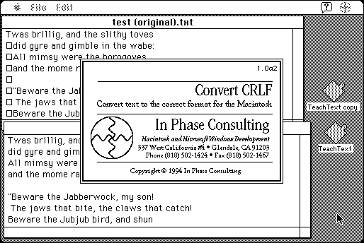

Download
crlf.zip (25K) CRLF 1.0a2 repackaged into a zipped hfs disk image and checksum file. The disk image can be mounted with Mini vMac.
crlf.hqx (29K) CRLF 1.0a2 in the original format.
copyright: In Phase Consulting
mod date: Jul 22, 1994
license: free for non-commercial use
last known url
(gone)
“A drag-and-drop utility for converting text files into a format compatible with the Macintosh.” Will work in System 6.

If you find these downloads useful, please consider helping the Gryphel Project, which hosts them.
Here are the md5 checksums for the downloads, signed with Gryphel Key 5:
--------- GRY SIGNED TEXT --------- 1dbc0a2f782f1f37630cd3a30ef95a21 crlf.zip 49f4cf9bc259e30533fcf355a432d8c9 crlf.hqx ------- BEGIN GRY SIGNATURE ------- Gry/4Xa8CFcUzxdN/Cog4TybA9hzSe0km6akyRGL9XCs0Ppi4mOK88IYqSHnWlxX wdf5FKHv9IIAGCC81yHQSSwanqAfI4UdTDSNT7dtmwicElkwh3jDhLDgxHD0MXvR 7VedrTtgSOIZ2RKhHfJXMCASvGOLxVevX70zSB6X6ZeGWDZm2X8i7XH4hYm0/idh -------- END GRY SIGNATURE --------